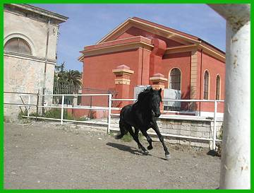

L’Istituto Incremento Ippico di Foggia, conosciuto storicamente come Deposito Cavalli Stalloni, è stato per decenni un punto di riferimento fondamentale per l’allevamento equino in Italia.
Nato dopo l’Unità d’Italia, aveva lo scopo di migliorare le razze cavalline attraverso la selezione di stalloni destinati all’agricoltura e agli usi militari.
Oggi il complesso rappresenta una testimonianza storica e culturale di grande valore per la città di Foggia e il suo territorio.